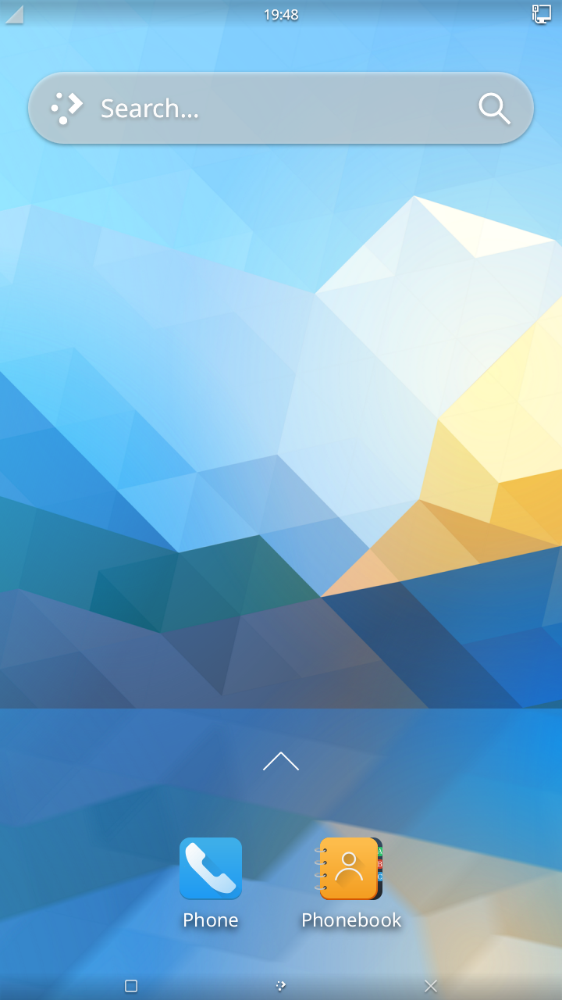

Plasma Mobile
|

Plasma Mobile homescreen. |
|
| Name | Plasma Mobile |
|---|---|
| Graphics stack | KWin on Wayland |
| Toolkit | Qt 5 |
| In postmarketOS | |
| Package | postmarketos-ui-plasma-mobile |
| Status | Available |
{kind=link}
A mobile variant of the KDE Plasma user interface , optimized for touchscreen.
Contents
Installation
Use the pre-built images from the downloads section of
postmarketos.org
, or build your own image with
pmbootstrap
. If using the latter, Plasma Mobile can be installed by selecting it as the UI in
pmbootstrap init
.
On existing systems, it can be installed by installing the
postmarketos-ui-plasma-mobile
meta package or
plasma-phone-components
if postmarketOS specific customization is not wanted.
When running
pmbootstrap install
you'll be prompted for a user password. Make sure to only use numeric characters [0-9] in this password as the Plasma Mobile lock screen uses this password as a PIN. On an existing Plasma Mobile install you can change your user password and PIN in the Terminal with the standard
passwd
command.
{kind=link}
Usage
First Boot
|
|
If you get stuck, head over to Matrix and IRC chats . Report issues . |
As with all other interfaces in postmarketOS, the first boot takes longer than usual: the file system will be resized to use the entire device.
After boot, you are asked for your PIN. For pre-built images, this is
147147
.
Connect to Wi-Fi
Swipe the top bar down to reveal a menu with a Wifi symbol. Tapping the symbol itself will turn Wifi on or off. To connect to a network the first time, tap the Wifi word below the symbol (the one with the small down arrow next to it). Now select an access point.
Wi-Fi kwallet bug for images before 2021-04-01
When connecting to an access point with a password, due to pmaports#1037 , you are required to set a kwallet password, and unfortunately the dialog is a bit awkward to navigate. Type in a password, then click the visibility button to show the password, and click OK to set it. You will be asked for this password after rebooting the phone and trying to connect to Wi-Fi again.
Images from 2021-04-01 onwards will have the kwallet bug fixed. If you have installed an image before, run the following commands over SSH after successfully connecting to Wi-Fi:
# apk update
# apk upgrade -a
$ mv ~/.local/share/kwalletd ~/.local/share/kwalletd_backup
$ mkdir -p ~/.local/share/kwalletd
$ cd ~/.local/share/kwalletd
# cp /etc/skel/.local/share/kwalletd/kdewallet.kwl .
# cp /etc/skel/.local/share/kwalletd/kdewallet.salt .
# chown <your user>:<your user> kdewallet.*
Install Updates
Go to the Home Screen (tap the bottom right X if you have an application open). Swipe from the bottom upwards to reveal the app menu and start Discover, KDE's graphical package manager frontend. When Discover asks for privileges (
pmaports#1036
), type in your user's PIN (e.g.
147147
for pre-built images).
Swipe from the left to center to open Discover's menu, and select the entry with the up-arrow at the very bottom (it may say "Fetching updates" or the number of updates available). From here you can perform the updates. Depending on what has been updated, you need to reboot the device afterwards for changes to take effect.
Running Apps from SSH session
In order to run applications on the device, you need to set up your environment similar to the environment in which the plasmashell is running:
export $(cat /proc/$(pidof plasmashell)/environ | tr '\0' '\n')
For the official KDE instructions on running Plasma Mobile, see https://develop.kde.org/docs/plasma-mobile/running-apps/ .
Taking screenshots
In command line:
qdbus org.kde.KWin /Screenshot org.kde.kwin.Screenshot.screenshotArea 0 0 1080 1920
qdbus-qt5 is from package qt5-qttools.
Power Off and Reboot
Hold the power button for about three seconds, then let go. Do not hold it too long, or else you will force-reboot your device. You will be presented with the options to reboot, power off or cancel. plasma-phone-components#71 is about making this a bit more intuitive.
Troubleshooting
Scaling
On devices such as the Samsung_Galaxy_A5_2015_(samsung-a5ulte) , Samsung_Galaxy_A3_2015_(samsung-a3) , BQ Aquaris X5 (bq-paella) or Moto_G4_Play_(motorola-harpia) , you may need to set a custom scaling factor.
The following sets a 2x scale factor:
kscreen-doctor output.1.scale.2
If you're trying to run this from SSH session, you need to set extra env vars:
XDG_RUNTIME_DIR=/run/user/10000 QT_QPA_PLATFORM=wayland kscreen-doctor output.1.scale.2
Log output
Logs are written to
~/.cache/tinydm.log
.
Logging isn't verbose
One needs to enable debug logging for certain components in
~/.config/QtProject/qtlogging.ini
. Without that, you barely see any log output. We
ship such a qtlogging.ini file
in
postmarketos-ui-plasma-mobile
because Plasma Mobile is relatively new and we want to be able to debug it properly.
If the file did not get installed for you, please double check if it is there and report in 1038 .
KWin doesn't work
|
|
Plasma Mobile shell uses some Wayland protocols, so you can't run it on X11 in case you tried to do that. |
Please follow these instructions for debugging.
Some env vars that may help Angelfish browser
# Recommended in https://bugreports.qt.io/browse/QTBUG-80665
export QTWEBENGINE_DISABLE_GPU_THREAD=1
# Flags are based on workaround for SFOS (disable-gpu-compositing) and default Android settings:
# Multiple Raster Threads: Disabled
# Flags enabled by Qt if enable-embedded-switches is given
export QTWEBENGINE_CHROMIUM_FLAGS="--disable-gpu-compositing --num-raster-threads=1 --enable-viewport --disable-composited-antialiasing"
( source )
Software rendering
|
|
Famebuffer backend for kwin is now dropped , so this section will no longer work, presumably since plasma-5.25 |
Plasma can also be used if your device doesn't support hardware acceleration (if it's a non-armhf device) yet by using software rendering. Please note that the interface will be slow, and it might not be usable for the average user.
Software rendering is not enabled automatically for now. Make sure
mesa-dri-gallium
is installed (it contains swrast dri module).
Edit kwin wrapper startup script
$ sudo nano /usr/bin/kwinwrapper
Comment out existing startplasma invocation command at the end of file and replace it with
export KWIN_COMPOSE=QPainter
export GALLIUM_DRIVER=softpipe
export LIBGL_ALWAYS_SOFTWARE=1
startplasma-wayland \
--framebuffer \
--xwayland \
--libinput \
--inputmethod maliit-server \
--exit-with-session=/usr/lib/libexec/startplasma-waylandsession
Then restart tinydm
$ sudo rc-service tinydm restart
You can alternatively try this script to run e.g. plasma-desktop on X11
#!/bin/sh
export KWIN_COMPOSE=QPainter
export GALLIUM_DRIVER=llvmpipe
export LIBGL_ALWAYS_SOFTWARE=1
export QSG_RENDER_LOOP=basic
export KIRIGAMI_LOWPOWER_HARDWARE=1
startx /usr/bin/startplasma-x11
Starting Plasma Mobile from the Terminal
If
postmarketos-ui-plasma-mobile
is installed, Plasma Mobile will be automatically launched via tinydm.
It can also be launched manually by running the following script:
#!/bin/sh
export QML2_IMPORT_PATH=/usr/lib/qt/qml:/usr/lib/qt5/qml
export QT_QPA_PLATFORMTHEME=KDE
export QT_QUICK_CONTROLS_STYLE=Plasma
export QT_WAYLAND_DISABLE_WINDOWDECORATION=1
export XDG_CURRENT_DESKTOP=KDE
export KDE_SESSION_VERSION=5
export PLASMA_PLATFORM=phone:handset
export QT_VIRTUALKEYBOARD_STYLE=Plasma
export QT_QUICK_CONTROLS_MOBILE=true
export QT_ENABLE_GLYPH_CACHE_WORKAROUND=1
sleep 2
if [ -d "/dev/dri" ]; then
kwin_wayland --drm --xwayland plasma-phone 2>&1 | logger -t "$(whoami):plasma-mobile"
else
# NOTE: using GALLIUM_DRIVER=llvmpipe might give you better performance (or not work at all.)
# see: https://gitlab.com/postmarketOS/pmaports/-/issues/852
export GALLIUM_DRIVER=softpipe
export KWIN_COMPOSE=Q
export LIBGL_ALWAYS_SOFTWARE=1
echo "startplasmamobile: using software rendering with: ${GALLIUM_DRIVER}" | logger -t "$(whoami):plasma-mobile"
kwin_wayland --framebuffer --xwayland plasma-phone 2>&1 | logger -t "$(whoami):plasma-mobile"
fi
Flickering in Mozilla Firefox
In case you experience flickering with the Mozilla Firefox web browser, it is because of
a rendering bug in the browser
, and can be mitigated by switching to the WebRenderer rendering backend by setting
gfx.webrender.all
to
true
in the browser's
about:config
window.